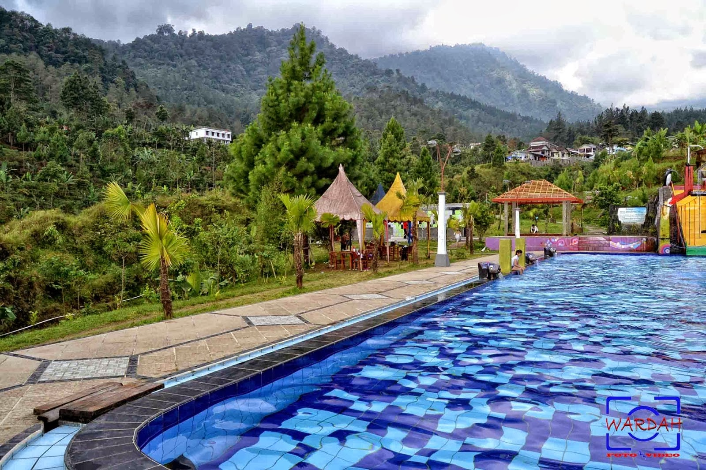

Tentang
Website ini dibuat untuk mengenalkan budaya dan geografi di wilayah indonesia,dimana nantinya pengunjung dapat mengetahui berbagai macam budaya,wisata,sejarah dan geografi dari berbagai tempat diindonesia.
Saya yakin bahwa keanekaragaman budaya dan hayati yang ada diindonesia dapat menarik bagi turis asing maupun lokal.
Saya juga merivew beberapa tempat sebagai rekomendasi liburan anda dan tentunya saya akan membagikan pengalaman menarik mengenai tempat tempat yang pernah saya kunjungi.